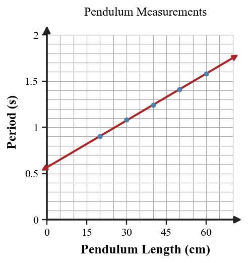
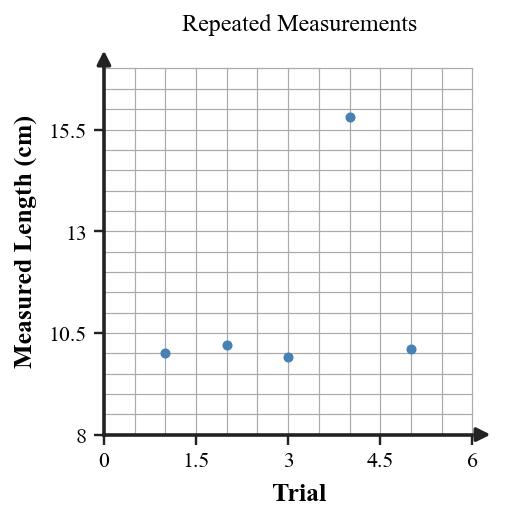

Six-question DOK check for Section 1.1: 2 DOK 1, 2 DOK 2, 1 DOK 3, and 1 DOK 4.
In the statement “The block is 4.8 cm long, so it is probably made of the denser material,” identify the observation and the inference.
State one reason scientists repeat measurements during an investigation.
Use the pendulum graph to describe the overall relationship between string length and period. Does the evidence support the claim that period tends to increase with length?

Two groups test the same claim. Group A reports all five trials; Group B reports only the best-looking trial. Which evidence set is stronger and why?
A group measures the same length five times and one result is far from the others. Critique the claim “the odd value proves the object changed length,” then give a stronger evidence-based interpretation.

Design a short investigation to test how one measurable variable affects another. Include a testable claim, the variable changed, the measurement taken, at least two controls, repeated trials, and the evidence pattern that would support the claim.